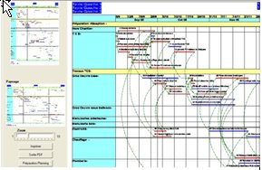

8. Préparation visualisation impression rapports
Avec le logiciel Ecoplanning on accès à deux onglets rapports dans lesquels on peut visualiser deux rapports différents.
Dans l'onglet " Elaboration Rapport ", c'est le rapport du planning en cours qui apparaît, le " Rapport 2" cela peut être un autre rapport du projet en cours ou d'un autre projet qui est ouvert.

Dans le haut de chacun des onglets rapport apparaît les données du projet, en comparant avec les données du rapport qui sera imprimé on connaîtra si un filtre à était utilisé dans le rapport mémorisé employé, (dans ce cas voir s'il faire apparaître toutes les tâches du projet ou choisir une nouvelle sélection avec filtrer),. On connaîtra également la date de début et de fin du projet.
Dès le choix d'un rapport mémorisé pour un projet donné, celui-ci va s'afficher à l'écran sous la forme de portrait ou de paysage, vous connaîtrez la forme retenue pour ce rapport mémorisé, mais vous pourrez choisir l'autre forme.
A droite apparaît sous un format réduit en portrait et paysage le rapport total, pour visualiser et examiner ce rapport pleine page
(le rapport peut être sur plusieurs page voir aide)
La démarche est la suivante :
- choisissez un agrandissement de 1 à 10 dans le zoom, au départ par exemple la moitie,
- puis cliquez sur une partie du rapport réduit dans le format choisI.
Aussitôt vous verrez apparaître la partie de ce rapport grossi, vous pourrez améliorer sa visualisation avec le zoom.
Dès que la mise au point de ce rapport vous convient vous pourrez :
- demandez l'impression du rapport
- créer un fichier PDF de ce rapport
C'est à partir de la boite de dialogue " Préparation Rapport " voir paragraphe ….que l'on pourra choisir pour chacun de ces deux onglets un rapport dans la liste des rapports mémorisés voir paragraphe …..
8.1 Préparation rapport
Pour accéder à la Boite de dialogue ci-dessous cliquez sur la commande " Préparation rapport" utilisez l'option " Préparation rapport" du menu " Outils
 Cette boite de dialogue a comme fonctions :
Cette boite de dialogue a comme fonctions :
- de permettre de choisir un rapport dans une liste de rapports qui sont mémorisés
- de visualiser le paramétrage du rapport choisi
- paramétrage colonnes
- prise en compte des traitements extérieurs : Trier -Grouper tâches - Filtrer tâches
- de pouvoir affiner ce rapport en fonction du projet en cours
- de pouvoir compléter ou créer un nouveau rapport
8.1.1 Liste des rapports mémorisés
Lorsqu'on charge cette boîte, tous les rapports qui sont mémorisés apparaissent.
Avec les flèches haute et basse on peut classer ces rapports par ordre de préséance.
Pour choisir un rapport mémorisé faites défiler la liste et cliquez sur celui-ci, il apparaît en caractère gras dans cette liste.
Vous consulter ces commentaires et de plus vous pourrez connaître :
- si un filtre à été utilisé lequel
- quel trier grouper à été utilisé
- le paramétrage des colonnes qu'il contient.
Remarque si on modifie un rapport mémorisé et que l'on le sauvegarde sous un nouveau nom, ou que l'on crée un nouveau rapport mémorisé,ils vont s'inscrire au début de la liste.
8.1.2 Modifier appliquer un rapport mémorisé
Vous pourrez connaître les paramétrages qui ont été pris en compte dans un rapport mémorisé:
- si un filtre à été utilisé lequel
- quel trier grouper à été utilisé
- le paramétrage des colonnes qu'il contient.
et si c'est nécessaire modifier compléter ces paramètres pour prendre en compte les spécificités du projet en cours, mémoriser ce rapport, voir sous un autre titre, l'appliquer
Voir les démarches ci-après pour Créer un nouveau rapport le sauvegarder
8.2 Créer un nouveau rapport le sauvegarder>
8.2 1 Cadre de paramétrage des Colonnes
Si vous cliquez sur la commande " Paramétrage colonnes " vous accéderez à la boite de dialogue ci-dessous
pour consulter, modifier , compléter créer un nouveau paramétrage colonnes, et ceci en vue de l'impression d'un rapport ou d'un planning Gantt avec grille.
8.2.2 Choisir les colonnes d'un nouveau rapport
Au départ on clique sur la touche " Nouveau " puis sur " Ajouter champ "
et successivement on choisit les champs concernés dans la liste
Dans la boîte de dialogue, ci-dessous, qui va apparaître vous allez choisir tous les champs des colonnes concernées et dans l'ordresouhaité.
Placez-vous sur la colonne concernée et cliquez dans celle-ci avec la touche droite de la souris
Utilisez la barre de défilement verticale pour vous déplacer dans la liste de .
Nota : Vous pouvez utiliser les flèches de préséance pour classer les champs entre eux
Cliquez sur le champ souhaité pour le sélectionner.
Pour ajouter le champ sélectionné dans la liste des Champs utilisés, double cliquez sur ce champ ou utilisez le bouton
Refaites la même opération pour les autres champs souhaités, validez avec ... ou le bouton Ok.
Vous avez la possibilité de changer l'ordre des champs de la liste Champs utilisés> avec les boutons et ou supprimer des champs de cette liste avec le bouton .
Cliquez sur " OK " pour le confirmer et sortir de cette boite de dialogue.
8.2.3 Paramétrage des colonnes du rapport
Dés que vous aurez choisis tous les champs des colonnes, celles-ci vont apparaître dans le rapport ou dans la grille du Gantt dans cet ordre Dans le volet du bas une ligne va s'afficher pour chacune des options.
Devant celles-ci, on a une première ligne qui matérialise les options initiales attribuées au données par défaut, va permettre de choisir le paramétrage du titre et des données qui seront prises par défaut pour l'ensemble des colonnes du rapport.
Choix du paramétrage du titre et des données des colonnes
Les options des différents champs du nouveau rapport à créer et à mémoriser vont s'afficher en deuxième troisième ligne etc. Comme elles sont pris par défaut elles seront les mêmes.
La démarche " du paramétrage colonnes " est la suivante :
" dans un premier temps, si nécessaire, on va modifier successivement ces options par défaut avec les commandes :
" données titre dans le volet du centre
" données colonnes dans le volet du bas
" dans un deuxième temps, avec les mêmes commandes on modifiera les exceptions dans les lignes concernées
Modifier la largeur des données titre et colonnes
Vous pouvez ajuster la largeur de ces colonnes : pointez la barre verticale de fractionnement et séparant deux colonnes.
A l'apparition d'une double flèche (horizontale ou verticale), cliquez-glissez dans le sens souhaité pour modifier la taille des colonnes.
Choisir ou Modifier le paramétrage du titre et des données des colonnes
Cliquez avec la touche droite de la souris dans la colonne concernée, vous accès à des boites de dialogue pour choisir ces données.
Pour le titre ou les données d'une colonne voir paragraphe ………
vous pourrez saisir : Police et couleur titre - Justification horizontale et verticale - Couleur fond colonne titre
Hauteur de la lignes titre et celles des lignes données colonnes
Ces deux hauteurs (lignes titre et celles des lignes données colonnes) seront saisie dans leur première ligne pour l'ensemble, il n'y a pas d'exception possible.
Vous pourrez modifier, en m^me temps, toutes les données lignes titre et celles des lignes données colonnes
qui ont été saisi par défaut , faites vos corrections puis cliquez sur la commande " appliquer par défaut "
Pour certaines colonnes paramétrage par exception de leur titre et des données
" dans un deuxième temps, avec les mêmes commandes on va modifier les éléments dans
les lignes correspondants au paramétrage de certaines colonnes
on pourra modifier pour celles-ci les données du titre ou des colonnes, voir les deux.
la mention située à gauche " oui " va disparaître et remplacé par "*" elle sera mis en évidence.
Choix du paramétrage des actions extérieures
Ce paramétrage effectué vous saisirez le nom du nouveau cadre de paramétrage mémorisé et le descriptif correspondant avant de le sauvegarder celui-ci
Autres possibilités de cette boîte de dialogue " Consulter paramètres colonnes" obtenu à partir de l'option " Préparation planning " du menu " Outils "
Lors d'une consultation ou la modification des données des paramètres des colonnes, vous pourrez revenir aux boîtes de dialogue " Préparation planning " ou de " Préparation rapport"
Lors de la création des données des paramètres des colonnes d'un nouveau rapport, vous pourrez revenir aux boîtes de dialogue " Préparation planning " ou de " Préparation rapport"
vous pourrez
- supprimer un rapport
- modifier les données d'une option, supprimer une option, modifier leur classement de préséances, et le mémorise ces modifications sous le même désignation et description ou de nouveaux contrats de licence d'utilisation du logiciel Ecoplanning 5.0